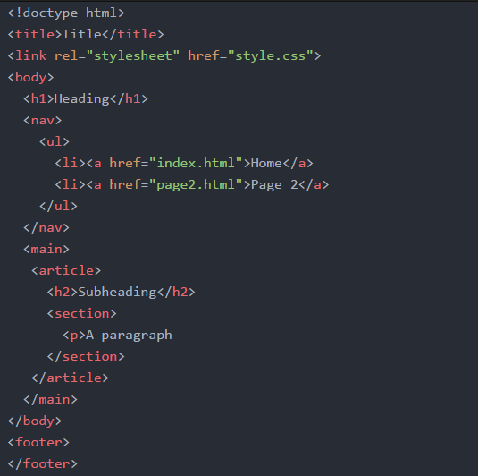

Discovery Log
Click to go to full discovery log
This was the first week of teaching for Web Foundations where a summary of what to expect from the unit was covered.
This week we discussed whether or not operating systems are necessary anymore due to the rise in use of cloud storage and devices such as chromebooks.
We then went on to discuss what our most useful websites are. I chose reddit.com because: The website design is clear to understand and there are forums on pretty much anything
Where information is collected and what information is collected about us was the topic of this weeks practical.
Ths concepts of confidentiality, availability and integrity of information was discussed in the lecture. The key fact learnt in this weeks lecture and practical, was that information is constantly being collected about us and that we need to be cautious of everything. Even simple questions like “where did you go to school” can be used to gain access to lots of personal information.
Social engineering is a common technique for gaining information about people. Some key aspects of that being: phishing, tailgating, shoulder surfing, trojans etc.
We started working on our literature reviews this week. A literature review is: A formal evaluation of the written academic research on a particular subject. It is important to make sure literature reviews don’t have personal opinions, uncritical summaries and needs to not sound like an essay.
Good sources are necessary for a good literature review. Good sources:
The focus of this week was academic writing. Academic writing needs to be evidence based, evaluative, structured and objective. In academic writing formality is essential, and making sure to avoid exclamations and emotive language is important. When referencing, we need to use APAv6 which structure is lastname, firstInitial., & lastname, firstInitial.(Year). Title.journalName, volume(issue), doi(if available)
We got introduced to html (hypertext markup language) this week. The typical layout for a html document is:

We can use winSCP to upload files to our virtual machine, and therefore host our sites. The commands in the secure shell to do that are:
Then the site can be accessed by using the IP address of the VM
The best site to go to to learn various aspects of html coding is the mozilla developer website.
In week 7 we submitted our literature reviews so did not learn any new content.
In this week I looked into the differences between HTML5 and HTLM4. I found that HTML5 has included new elements, which used to be used be java-script based hacks in HTML4, directly into the language, for example the Cascading Style Sheets(CSS) are used for styling websites, and should be saved in an external file so that it can be imported into multiple pages without having redundant code.
An exmple of styling:
CSS3 also alows for some basic animaton through transitions and transforms, and includes selectors like This was demonstrated in the lecture where there was a demonstration on how to make the star wars opening using html and css formatting. The main thing I discovered this week is that I should probably make sure I watch all the star wars films in order to feel like a true computer science student.
The focus of this week was ensuring we were using our IDE’s effectively. It was recommended to use Atom.io to edit html and css pages. There are many packages and libraries available to customise the environment and make it more efficient.
One of the most useful packages is the multi-cursor one, which allows editing of multiple lines at the same time. This is particularly useful when adding markup to large bodies of text, e.g making sure there is the before every paragraph. Another useful one was the preview package which has a live preview next to the code you edit, to allow you to view what the html page will look like
This week's focus was on using images. There were many concepts learnt this week to effectively style images in a html page. The Also learnt that you can use the You can change the height and width inside the img tag, but it is better to have that referenced in the style sheet than to do it directly in the element. And the key thing learnt this week was DO NOT USE THE STYLE ATTRIBUTE. If individual images need to be styled they can be referenced with ID selectors in css stylesheet. And to style multiple at the same time, we can use classes to reference them.
*include things about changing style on hover, have a picture with external style sheet for just this page*
There are also advanced css selectors that cn be used to style elements if certain conditions are met. Examples below:
Figure can be used to contain an image and a Week 2
Week 3
Week 4
Week 5
Week 6
cd folder name ⏎
Http-server
Week 7
<canvas> and <video> tags. Also elements like <article> and <section> have been included so that less <div> tags are necessary.
Week 8
p{
Background: red;
color: white;
}
:hover which applies a certain style when an element is hovered over
Week 9
Week 10
img element is the most effective way of including a picture in the site. To do this you do <img src="..." alt="...">. The alt tag is necessary for every image as it gives a text description of what an image is, this is useful for accessibility purposes as it allows a screen reader to describe the image.
code tag to change sections of text into a code font.
:target changes elements if that element is targeted
:hover changes elements if it is hovered over
:active changes elements if it is selected
figcaption like shown below